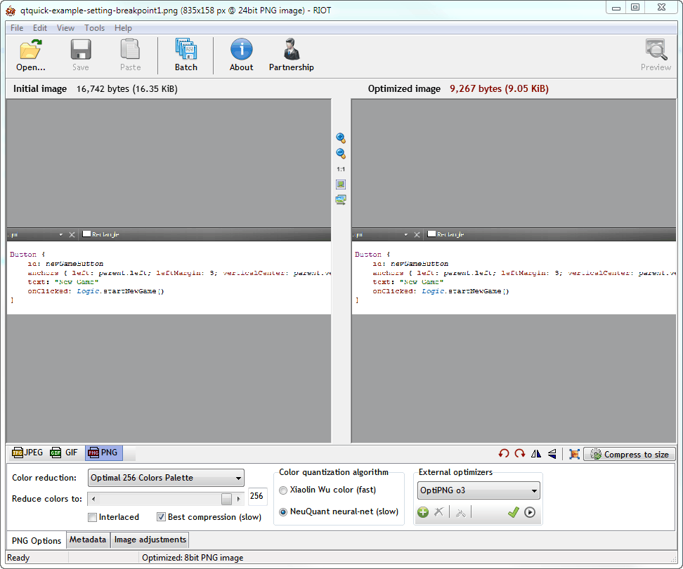

Writing Documentation
When you add plugins or contribute new features to Qt Creator, you probably want other people to know about them and to be able to use them. Therefore, you should also contribute documentation for them. Follow the guidelines in this section to make sure that your documentation fits in well with the rest of the Qt Creator documentation.
When you contribute a plugin, you should write documentation both for the developers who use Qt Creator and for the ones who develop it.
Write the following user documentation for addition to the Qt Creator Manual:
- Overview topic, which describes the purpose of your plugin from the viewpoint of Qt Creator users
- Procedure topics, which describe how to use your plugin as part of Qt Creator
- Reference topics, which contain information that developers occasionally need to look up (optional)
Write the following developer documentation for addition to the Extending Qt Creator Manual:
- Overview topic, which describes the architecture and use cases for your plugin from the viewpoint of Qt Creator developers
- API documentation, which is generated from code comments
Configuring the Documentation Project
Qt Creator documentation is written by using QDoc. For more information about using QDoc, see the QDoc Manual.
QDoc finds the new topics automatically, when you place them as .qdoc files in the correct folder. However, to make the topics accessible to readers, you must also add them to the table of contents (doc\src\qtcreator-toc.qdoc) and fix the next page and previous page links to them from other topics.
Creating Folders and Files
These instructions apply only to the Qt Creator Manual. Add API documentation directly to the code source files. However, you can write an API overview also as a separate .qdoc file.
Create a subfolder for your documentation in the Qt Creator project folder in the doc\src folder. Create a separate file for each topic.
The easiest way is probably to copy an existing file, save it as a new file, and modify it. This way, you already have samples of the necessary bits and pieces in place, such as topic start and end commands, copyright statement, links to next and previous topics, and topic title.
Integrating Topics to Documentation
You must integrate your new topics to the Qt Creator Manual and Extending Qt Creator Manual by adding links to them to the table of contents and to other relevant topics.
To link to the topic, you can use the topic title. For example:
\l{Integrating Topics to Documentation}
This does not work if topic titles are not unique. Also, if you change the title, the link breaks. You can avoid this risk by adding the \target command to your topic and then linking to the target.
Updating Next and Previous Links
When you add new topics to a document, you must also change the navigation links of the topics around them. This is very error prone when done manually, and therefore we have a script called fixnavi.pl for it. For the script to work, you must add the \nextpage and \previouspage commands to the topic, with dummy values (for example, \nextpage=anything.html).
Note: The script creates the links according to the TOC in the topic set as the value of the indexTitle configuration parameter (doc\src\qtcreator-toc.qdoc). If your topics are not listed in the TOC, the script removes the \nextpage and \previouspage commands from them.
To run the script, you must have Perl installed. If you build Qt yourself, you should already have it. Otherwise, download and install Perl.
To run the script, enter the following command in the doc folder:
- nmake fixnavi (on Windows)
- make fixnavi (on Linux)
Writing Text
Follow the guidelines for writing Qt documentation.
The documentation must be grammatically correct English and use the standard form of written language. Do not use dialect or slang words. Use idiomatic language, that is, expressions that are characteristic for English. If possible, ask a native English speaker for a review.
Capitalizing Headings
Use the book title capitalization style for all titles and section headings (\title, \section1, \section2, and so on). For more information, see Using Book Style Capitalization.
Using Images
You can illustrate your documentation by using screen shots, diagrams, and other images.
Use the \image and \inlineimage QDoc commands to refer to images from the text. You do not need to add paths to image names. For example:
\image riot.png
Taking Screen Shots
Qt Creator has the native look and feel on Windows, Linux, and macOS, and therefore, screen shots can end up looking very different, depending on who takes them and which system they use. To try to preserve a consistent look and feel in the Qt Creator Manual, observe the guidelines listed in this section when taking screen shots.
Note: Do not rely on screen shots present reasonable example values to users, but always place example values also in the text.
- Use the screen resolution of 1366x768 (available on the most commonly used screens, as of this writing).
- Use the aspect ratio of 16:9.
- Open the application in the maximum size on full screen.
- Use your favorite tool to take the screen shot.
- Include only the part of the screen that you need (you can crop the image also in the screen capture tool).
- To highlight parts of the screen shot, use the images of numbers that are stored in
doc\images\numbersin the Qt Creator repository. - Before you submit the images to the repository, optimize them to save space.
Hightlighting Parts of the Screen
You can use number icons in screenshots to highlight parts of the screenshot (instead of using red arrows or borders, or something similar). You can then refer to the numbers in text. For and example, see the Development Tools topic in the Qt reference documentation.
This improves the consistency of the look and feel of Qt documentation, and eliminates the need to describe parts of the UI in the text, because you can just insert the number of the element you are referring to in brackets.
You can find a set of images that show the numbers from 1 to 10 in the doc\images\numbers directory (or in the qtdoc module sources in doc\images\numbers).
To use the numbers, copy-paste the number images on the screenshot to the places that you want to refer to from text.
Optimizing Images
Save images in the PNG format in the Qt Creator project folder in the doc\images folder. Binary images can easily add megabytes to the Git history. To keep the history as small as possible, the Git post-commit hooks remind you to try to keep image size below 50 kilobytes. To achieve this goal, crop images so that only relevant information is visible in them. Before committing images, optimize them by using an image optimization tool.
Optimization should not visibly reduce image quality. If it does, do not do it.
You can use a web service, such as https://tinypng.com, or an image optimization tool to shrink the images. For example, you can use the Radical Image Optimization Tool (RIOT) or OptiPNG on Windows, ImageOptim on macOS, or some other tool available on Linux.
With ImageOptim, you simply drag and drop the image files to the application. The following section describes the settings to use for RIOT.
Using RIOT
Download and install RIOT.

Open your images in RIOT and use the following settings for them:
- Color reduction: Optimal 256 colors palette
- Reduce colors to: 256
- Best compression (slow)
- Color quantization algorithm: NeuQuant neural-net (slow)
- External optimizers: OptiPNG o3
Compare the initial and optimized images to check that image quality is preserved. If the image quality deteriorates, do not use color reduction (select the True Color option, instead).
You can also see the sizes of the initial and optimized image.
Using OptiPNG
Download and install OptiPNG.
OptiPNG is a command-line tool that you can invoke from the Qt Creator project folder (or any folder that contains your project). To optimize a screenshot, enter the following command (here, from the Qt Creator project folder):
optipng -o 7 -strip all doc/images/<screenshot_name>
Building Documentation
You use QDoc to build the documentation. Build the documentation from time to time, to check its structure and the validity of the QDoc commands. The error messages that QDoc issues are generally very useful for troubleshooting.
For more information about setting up the build environment if you do not want to build the whole Qt, see Building Qt Documentation on the Qt wiki.
The content and formatting of documentation are separated in QDoc. The documentation configuration, style sheets, and templates have changed over time, so they differ between Qt and Qt Creator versions. Since Qt Creator version 3.3, only Qt 5 is supported for building documentation. The templates to use are defined by the qt5\qtbase\doc\global\qt-html-templates-offline.qdocconf and qt5\qtbase\doc\global\qt-html-templates-online.qdocconf configuration file. They are fetched from Qt sources by adding the following lines to the qdocconf file:
include ($QT_INSTALL_DOCS/global/qt-html-templates-offline.qdocconf)for help filesinclude ($QT_INSTALL_DOCS/global/qt-html-templates-online.qdocconf)for publishing on the web
Note: To have the correct fonts loaded for the online version, you must be running it on a web server.
Note: If the styles look wrong to you when reading help files in Qt Creator or Qt Assistant, you might be looking at them in the QTextBrowser instead of the Qr WebEngine browser. This happens if you do not have Qt WebEngine installed.
To build documentation for the sources from the qtcreator master branch, use build scripts defined in the doc.pri file. To build all Qt Creator docs in the help format and to create help files (.qch), enter the following build commands from the project folder (after running qmake):
- nmake docs (on Windows)
- make docs (on Linux and macOS)
The Qt Creator Manual HTML files are generated in the doc/qtcreator directory. The Extending Qt Creator Manual files are generated in the doc/qtcreator-dev directory. The help files (.qch) are generated in the share/doc/qtcreator directory in the Qt Creator build directory on Windows and Linux, and in the bin/Qt Creator.app/Contents/Resources/app directory on macOS. You can view the HTML files in a browser and the help files in the Qt Creator Help mode. For more information about adding the help files to Qt Creator, see Adding External Documentation.
Besides docs, you have the following options:
- html_docs_qtcreator - build Qt Creator Manual in help format, but do not generate a help file
- html_docs_qtcreator-dev - build Extending Qt Creator Manual in help format, but do not generate a help file
- qch_docs_qtcreator - build Qt Creator Manual in help format and generate a help file (.qch)
- qch_docs_qtcreator-dev - build Extending Qt Creator Manual in help format and generate a help file (.qch)